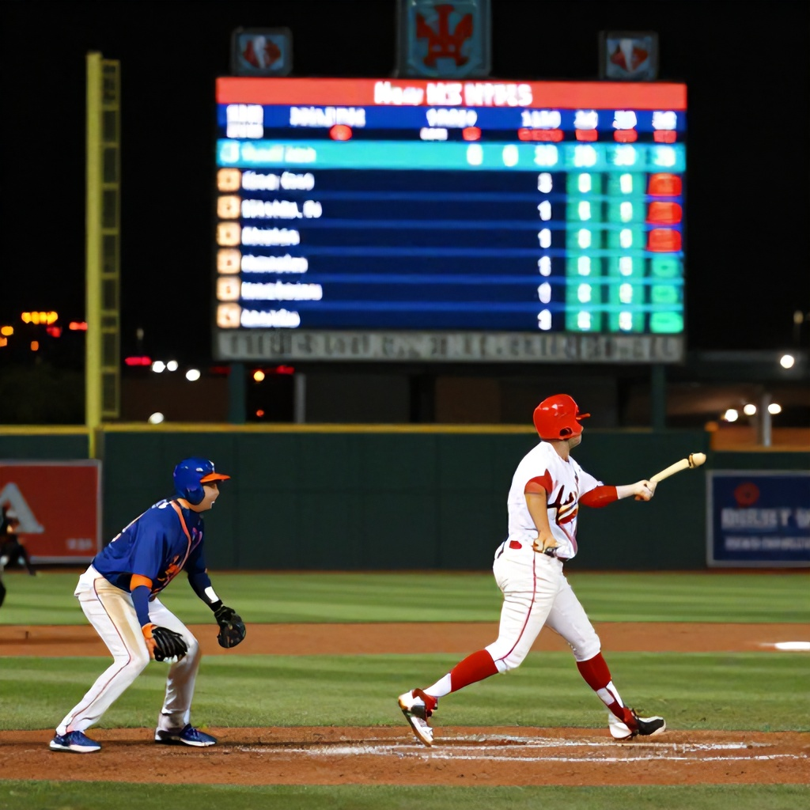

The New York Mets face the St. Louis Cardinals in what promises to be a high-scoring affair on Thursday night, with the betting market pointing toward an entertaining game that could exceed the posted over/under of 9 runs.
The Matchup
At first glance, this seems like a mismatch on paper. The Cardinals, led by their potent offense and veteran leadership, are favored in the moneyline market at +175 according to Sports Select, while the Mets are listed at +100. However, when we look deeper into the betting lines, a compelling opportunity emerges for value bettors.
Betting Analysis
The spread line shows the Cardinals at -0.5, which is a very narrow margin. But the key lies in the total line—the over/under is set at 9 runs, with no specific team totals indicated. This suggests that the bookmakers expect both teams to score relatively evenly, but there's a significant chance that the combined run total could surpass that mark.
Why the Over Makes Sense
The Mets have been showing flashes of offensive prowess this season, particularly against pitching staffs that struggle to contain power hitters. Their lineup includes several players who can change the game with a single swing, especially in crucial moments.
On the other side, the Cardinals' offense has shown consistency, though they may not always dominate the scoreboard. The key here is that both teams have demonstrated a tendency to score runs in bunches rather than in small, steady increments.
Additionally, the Mets’ pitching staff, while not elite, has been able to keep games close, providing opportunities for scoring. The Cardinals' rotation has had its ups and downs, but they're capable of allowing more runs than expected when facing tough lineups.
Recommendation
With the over/under set at 9 runs and both teams having proven track records of scoring, we recommend backing the over in this game. The odds suggest a competitive contest where scoring should be abundant. If you’re looking for a more conservative approach, the Mets at +100 moneyline offers solid value given their recent form and the high-scoring nature of the matchup.
In summary:<br />- Over 9 runs at +110<br />- New York Mets Moneyline at +100
Both picks provide attractive value in a game that’s likely to go either way, but leans toward a high-scoring performance.